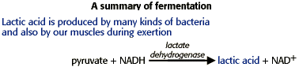

Metabolism Problem SetProblem 3 Tutorial: TrematolTrematol is a metabolic poison derived from the white snake root. Cows eating this plant concentrate the poison in their milk. The poison inhibits liver enzymes that convert lactic acid to other compounds for metabolism. Why does physical exertion increase symptoms of poisoning by trematol? Why does the pH of the blood decrease in a person who has digested trematol? Fermentation and blood pHLactic acid is produced in our cells in the absence of sufficient oxygen in a process called fermentation. Our muscles in particular use the conversion of pyruvate produced in glycolysis to lactic acid to regenerate NAD+ from NADH, allowing continued ATP production from glycolysis.  Lactic acid build up leads to the symptoms of trematol poisoning. Exertion would increase lactic acid production by our muscles, and an inability to metabolize lactic acid in our liver due to tremetol would result in a build up of lactic acid in our blood, decreasing the pH. |


The Biology Project
University of Arizona
Tuesday, August 20, 1996
Contact the Development Team
http://biology.arizona.edu
All contents copyright © 1996. All rights reserved.